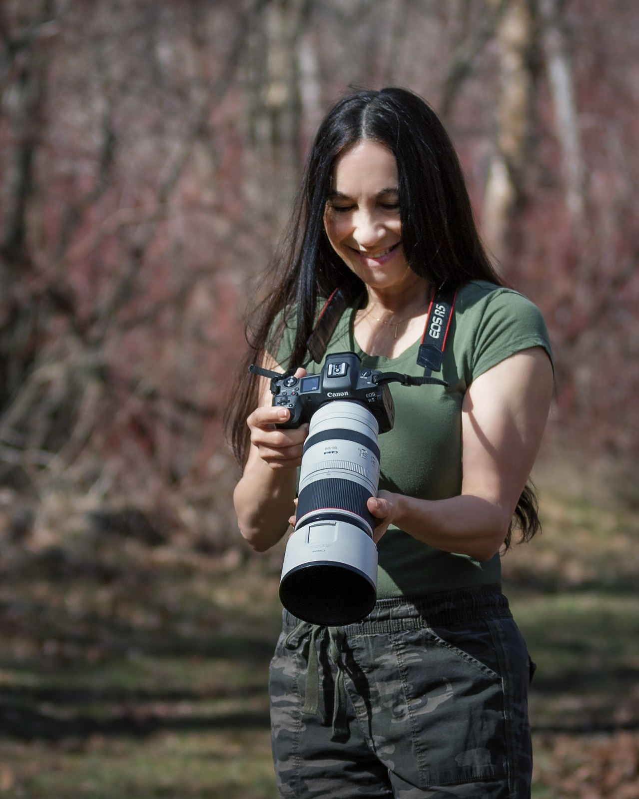

Wildlife Photography
Capturing the untamed beauty of wildlife through patience, passion, and a deep reverence for the natural world.

Luz Hernandez Kroll is a wildlife photographer based in Utah whose work captures the beauty, emotion, and quiet strength of animals in their natural world. Through patience and deep respect for wildlife, her images aim to reveal the personality and spirit of each creature she encounters — from the fierce gaze of a fox to the gentle curiosity of birds and the rugged resilience of mountain animals.
Her photography has been featured in several publications. She was honored as a featured photographer in Everything Fox Magazine, where one of her images appeared on the cover and her work was showcased in an extensive 18-page editorial feature including her biography and fox photography. Her images were also included in wildlife stories about Rocky Mountain goats and Utah's West Desert wild horses, documenting the experience of observing these remarkable animals in their natural habitats.
Luz and her husband were also selected as featured photographers in the international online publication The Universe of Colour Photography, where their work was highlighted in a multi-page editorial feature and interview.
Using a Canon EOS R5 and long wildlife lenses, Luz spends countless hours in nature waiting for those fleeting moments when light, behavior, and emotion align. Her goal is not only to document wildlife, but to tell the quiet stories unfolding in the natural world.
Through her photography, Luz hopes to inspire a deeper appreciation for wildlife and the wild places they call home.
@luzhernandezkrollphotography →